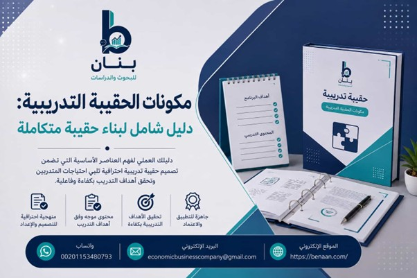
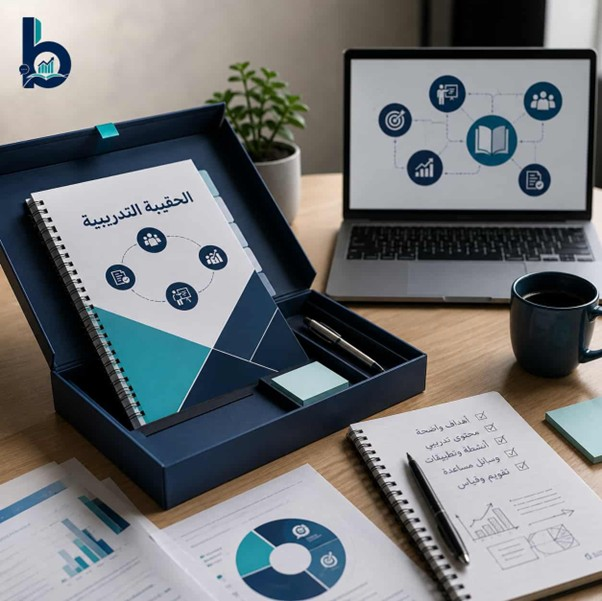

مقدمة
ستتعرف في المقال الحالي على مكونات الحقيبة التدريبية من نقطة البدء، نهاية بالمراجعة على عناصر الحقيبة التدريبية، والتعرف على كل مكون من مكونات الحقيبة التعليمية. عند تصميم الحقائب التدريبية هناك نقاط رئيسية لا يمكن التغافل عنها عند إعداد المحتوى التدريبي للحقيبة التدريبية، وأحد تلك النقاط مكونات الحقيبة التدريبية.
في هذا المقال توضح بنان مكونات الحقيبة التدريبية وعناصرها وبناء محتوى تعليمي متكامل الأركان، حيث تتكون مكونات الحقيبة التعليمية من دليل المدرب والمتدرب ودليل الأنشطة وأدوات التقييم وغيرها.
ما هي مكونات الحقيبة التدريبية ولماذا تُعد أساس نجاح التدريب
الحقيبة التدريبية هي نظام منظم من المواد والأدوات المصممة لضمان تقديم برنامج تدريبي واضح ومتسق وذي فعالية. وهي تجمع كل العناصر اللازمة لتخطيط عملية التدريب وتنفيذها وتقييمها. فيما يلي نظرة عامة على أهم مكونات الحقيبة التدريبية من بنان ولماذا تُعد أساس نجاح التدريب:
- وضع خطة للتدريب واضحة.
- تحديد أهداف العملية التدريبية.
- تصميم محتوى التدريب.
- دليل المدرب.
- أنشطة وتمارين التدريب.
- إرشادات التنفيذ والمتابعة.
الفرق بين مكونات الحقيبة التدريبية ومحتواها التعليمي
يكمن الفرق بين مكونات الحقيبة التدريبية ومحتواها التعليمي في أن الحقيبة التدريبية تتضمن مجموعة من المكونات مجتمعةً حتى تصبح عملية التدريب منهجية وقابلة للقياس وقابلة للتكيف مع مختلف أنواع البرامج.
| مكونات الحقيبة التدريبية | المحتوى التعليمي |
|---|---|
| إطار شامل يضم جميع أدوات التخطيط والتنفيذ والتقييم | مجموعة المعارف والمهارات الأساسية التي يقدمها البرنامج |
| يشمل دليل المدرب والمتدرب والأنشطة وأدوات التقييم | يُقسَّم إلى وحدات أو أقسام تحتوي معلومات نظرية وتطبيقية |
| يضمن الاتساق والجودة وقابلية القياس لعملية التدريب | يتضمن أمثلة ودراسات حالة مرتبطة بالأهداف التدريبية |
المكونات الأساسية للحقيبة التدريبية الناجحة وفق المعايير الحديثة
وفقًا لمعايير التدريب والجودة الحديثة، لم يعد البرنامج التدريبي الناجح مجرد مادة تعليمية أو تدريبية، بل أصبح نظامًا شاملًا قائمًا على النتائج ومتوافقًا مع مبادئ الكفاءة والتقييم والتحسين المستمر. المكونات الأساسية للحقيبة التدريبية الناجحة وفق المعايير الحديثة تشمل:
- حقيبة تدريبية ذات مخرجات تعلم واضحة قائمة على الكفاءة.
- إطار منهجي منظم للحقيبة التدريبية.
- توافق الحقيبة التدريبية مع معايير الكفاءة.
- اعتماد الحقيبة التدريبية على استراتيجية التقييم الحديثة.
- دليل تنفيذ المدرب.
الهيكل العام للحقيبة التدريبية من البداية إلى التنفيذ
يكمن الهيكل العام للحقيبة التدريبية في تسلسل تدريبي وتعليمي واضح يركز على الجودة. وقد يختلف باختلاف المنظمة أو معايير الاعتماد، إلا أن الهيكل الأساسي من بنان يتضمن عمومًا المراحل التالية:
- تحديد الاحتياجات التدريبية.
- تحديد أهداف التعلم والكفاءات.
- اختيار بنية المحتوى وتسلسله.
- اختيار استراتيجيات التدريس.
- تحديد أساليب التقييم.
للتعرف على خطوات تصميم الحقيبة التدريبية بالتفصيل يمكنك مراجعة دليلنا المتخصص.

مكونات الحقيبة التدريبية الخاصة بالمدرب
الحقيبة التدريبية الخاصة بالمدرب هي مجموعة متكاملة من المواد والأدوات التي تساعد المدرب على تقديم البرنامج باحترافية واتساق وفعالية. تُنظّم مكوناتها عادةً لدعم التحضير والتنفيذ والتفاعل والتقييم. ولقد جمعت لك بنان أهم مكونات الحقيبة التدريبية الخاصة بالمدرب:
- دليل المدرب — المخطط التشغيلي ونقطة الانطلاق لبدء البرنامج.
- خطة وجدول التدريب — توزيع الوقت والجلسات بشكل واضح.
- أدوات العرض — الشرائح والعروض التقديمية والوسائل البصرية.
- أنشطة وتمارين التدريب — لتعزيز التطبيق العملي.
- أدوات التقييم — لقياس مستوى اكتساب المتدربين.
- نماذج التغذية الراجعة والتقييم — لتحسين الأداء باستمرار.
دليل المدرب وإدارة الجلسات التدريبية
يمثل دليل المدرب المخطط التشغيلي ونقطة الانطلاق لبدء البرنامج التدريبي، وله علاقة وطيدة بإدارة الجلسات التدريبية. ويعمل كلا الجانبين معًا لضمان تقديم التدريب باحترافية وتحقيق مخرجات التعلم المرجوة. وإدارة جلسة التدريب تشير إلى قدرة المدرب على إدارة بيئة التعلم بفعالية أثناء التقديم، وتشمل:
- إدارة الوقت بكفاءة خلال الجلسة التدريبية.
- تشجيع المشاركين على المشاركة الفعّالة.
- تعديل وتيرة الشرح بناءً على فهم المتدربين.
خطة التنفيذ والجدول الزمني للتدريب
تُوضح خطة التنفيذ والجدول الزمني للتدريب عنصرين متكاملين في الحقائب التدريبية. فهما يضمنان تقديم البرنامج بكفاءة وفي الوقت المحدد ووفقًا للأهداف المرجوة. وخطة التنفيذ بمثابة خارطة طريق عملية لبرنامج التدريب توضح كيفية تنفيذه عمليًا خطوة بخطوة.
مكونات حقيبة المتدرب داخل الحقيبة التدريبية
تتضمن مكونات حقيبة المتدرب داخل الحقيبة التدريبية عادةً من بنان:
- الإرشادات (دليل المدرب) — توجيهات واضحة لمتابعة البرنامج.
- المحتوى (الشرائح والمواد) — مادة علمية مبسطة ومنظمة.
- الأنشطة — تمارين وتطبيقات عملية.
- أدوات التقييم — اختبارات وأوراق عمل.
- اللوجستيات — جداول ومواعيد ومعلومات تنظيمية.
- عناصر الجودة — مؤشرات لتحقق المتدرب من فهمه.
دليل المتدرب والمحتوى التعليمي المبسط
يُعدّ دليل المتدرب والمحتوى التعليمي المبسط ركيزتين أساسيتين في أي حقيبة تدريبية مُصمّمة جيدًا. وبنان تعرف دليل المتدرب بأنه كتيب مُنظّم مُصمّم خصيصًا للمشاركين، يساعدهم على اتباع البرنامج التدريبي بفعالية، وهو وثيقة مرجعية منظمة للمتعلم تضمن سهولة الفهم والتطبيق.
الأنشطة والتطبيقات العملية للمتدربين
تُشكّل الأنشطة والتطبيقات العملية في الحقيبة التدريبية عنصرًا أساسيًا في أي برنامج تدريبي فعّال، لأنها تُحوّل المعرفة النظرية إلى مهارات عملية. كما أنها تضمن المشاركة الفعّالة والفهم العميق وتحسين الأداء بشكل ملموس.
المحتوى العلمي كأحد أهم مكونات الحقيبة التدريبية
أحد أهم مكونات الحقيبة التدريبية هو إعداد وتطوير المحتوى التدريبي والمادة التعليمية الأساسية، وقد تشمل ما يلي:
- المفاهيم النظرية والتطبيقات العملية.
- دراسات الحالة والأمثلة والمراجع.
- البيانات المُحدَّثة والسيناريوهات الواقعية.
تنظيم المادة العلمية بشكل احترافي
يشكل تنظيم المواد العلمية بشكل احترافي من بنان مهارة أساسية في إعداد الحقائب التدريبية عالية الجودة. ويضمن التنظيم الاحترافي للمادة العلمية: الوضوح، والتسلسل المنطقي، والمصداقية، وسهولة الفهم. قبل تنظيم المادة التدريبية حدد بوضوح ما يلي:
- الغرض من المحتوى التدريبي.
- الجمهور المستهدف من التدريب.
- النتائج التعليمية أو البحثية أو التدريبية المتوقعة.
الربط بين الجانب النظري والتطبيقي
ربط النظرية بالتطبيق أحد أهم مبادئ تصميم الحقائب التدريبية الفعّالة. فعندما يكون هذا الربط قويًا، يفهم المتدربون المفاهيم بوضوح ويستطيعون تطبيقها بثقة في المواقف الواقعية. ينبغي أن تتضمن الأهداف المحددة في التدريب الربط بين الجانب النظري والتطبيقي، فإذا كانت الأهداف عملية يصبح التدريب بطبيعة الحال تطبيقيًا.
الأنشطة والتدريبات العملية ضمن مكونات الحقيبة التدريبية
تضمين الأنشطة والتدريبات العملية في الحقيبة التدريبية خطوة أساسية تضمن تجاوز التعلّم النظري إلى اكتساب الكفاءة العملية. هذه العناصر ليست إضافات اختيارية، بل هي مكونات جوهرية لتصميم تدريبي فعّال وحديث. وتتمثل أهمية تضمين الأنشطة والتدريبات العملية من خلال:
- تحويل المعرفة إلى مهارة.
- زيادة التفاعل والمشاركة.
- تحسين الاستيعاب والفهم.
- تعزيز الثقة في تطبيق المفاهيم.
- إتاحة تقييم الأداء بشكل قابل للقياس.
تصميم التمارين والأنشطة التفاعلية
تصميم التمارين والأنشطة التفاعلية للحقائب التدريبية بمثابة الركيزة الأساسية لتصميم التدريب الفعال. فالتمارين والأنشطة التفاعلية تُحوّل المتعلّم أو المتدرب من الاستماع السلبي إلى المشاركة الفعّالة، مما يُحسّن الفهم والاستيعاب وتنمية المهارات.
استخدام الألعاب التدريبية لتعزيز التعلم
أكدت العديد من الدراسات والبحوث على أهمية استخدام الألعاب التدريبية في التدريب لما لها من أثر فعال في جعل المتدربين أكثر نشاطاً وتفاعلاً مع بعضهم البعض في المواقف التعليمية والتدريبية المختلفة، مما يؤدي إلى توفير فرص النمو المتكامل للمتدربين واكتساب الكثير من المهارات والمفاهيم والقيم التي تتصل بحياتهم المهنية والشخصية.
الوسائل التعليمية والتقنيات المستخدمة في الحقيبة التدريبية
الوسائل التعليمية والتقنيات المستخدمة في الحقيبة التدريبية هي الوسائل والمواد والأنظمة الرقمية المستخدمة لتقديم المحتوى التدريبي بشكل احترافي. وهي تجمع بين الموارد التقليدية والتقنيات الرقمية الحديثة لتعزيز التفاعل وتحسين نتائج التعلّم. وفيما يلي الفئات الرئيسية:
- الأدوات التعليمية التقليدية — الكتب والأوراق واللوحات.
- الأدوات السمعية والبصرية — الفيديوهات والعروض التقديمية والرسوم البيانية.
- تقنيات التعلم الرقمي — منصات التعلم الإلكتروني والمحاكاة التفاعلية.
وتدمج الحقيبة التدريبية المصممة جيدًا من بنان التقنيات التقليدية والرقمية والتفاعلية لضمان أن يكون التعلم والتدريب ليس نظريًا فحسب، بل عمليًا وجذابًا وقابلًا للقياس أيضًا.
الأدوات البصرية والعروض التقديمية
تعد الأدوات البصرية والعروض التقديمية عناصر أساسية في أي حقيبة تدريبية، لأنها تُحوّل المعلومات المجردة إلى محتوى واضح وجذاب وسهل الفهم. ويقصد بالأدوات البصرية المواد المستخدمة لنقل المعلومات من خلال العناصر البصرية بدلاً من النصوص فقط، بينما العروض التقديمية هي العروض البصرية المنظمة التي يستخدمها المدربون لتقديم المحتوى.
المواد الإثرائية والمصادر الداعمة
المواد الإثرائية والمصادر الداعمة هي أدوات تعليمية إضافية تُضاف إلى برامج التدريب لتعميق الفهم وتوسيع المعرفة ومساعدة المتدربين على تجاوز المحتوى الأساسي المطلوب. والمواد الإثرائية هي محتوى تكميلي لتوسيع نطاق التعلم، بينما الموارد الداعمة أدوات تُساعد على توضيح المحتوى وتعزيزه وتسهيل تقديمه.
أدوات التقييم كجزء أساسي من مكونات الحقيبة التدريبية
أدوات التقييم هي الأساليب والوسائل والإجراءات المُستخدمة لقياس معارف المتدربين ومهاراتهم وأدائهم قبل التدريب وأثناءه وبعده. وتشكل أدوات التقييم جزءًا أساسيًا وجوهريًا في مكونات الحقيبة التدريبية، لأنها تُحدّد ما إذا كانت أهداف التدريب قد تحققت بالفعل.
التقييم القبلي والبعدي لقياس الأداء
| التقييم القبلي (التشخيصي) | التقييم البعدي (الختامي) |
|---|---|
| يُستخدم قبل بدء التدريب | يُستخدم في نهاية التدريب |
| يحدد مدى المعرفة السابقة ومستوى المهارة | يقيس الإنجاز الكلي لعملية التدريب |
| اختبارات القبول، المقابلات الأولية | الامتحانات النهائية، المشاريع، الاختبارات العملية |
نماذج التقييم وتحليل نتائج التدريب
تُعدّ نماذج التقييم وتحليل نتائج التدريب في الحقيبة التدريبية مكوّنين أساسيين في أي نظام تدريب فعّال، إذ تُحدّد ما إذا كان التدريب قد حقق أهدافه وكيف يُمكن تحسينه. ونماذج التقييم في التدريب أُطر تُستخدم لقياس فعالية البرنامج التدريبي بأسلوب منهجي وموضوعي.
المكونات التنظيمية والإدارية للحقيبة التدريبية
تُشكّل المكونات التنظيمية والإدارية لأي حقيبة تدريبية الركيزة الأساسية التي تضمن سلاسة التخطيط والتنفيذ والمتابعة والتقييم. فهي تُحدد كيفية إدارة التدريب، وليس فقط محتواه.
الغلاف والمقدمة والأهداف التدريبية
من الضروري أن يتضمن غلاف الحقيبة ومقدمته عدة عناصر من أهمها:
- عنوان المادة التدريبية.
- اسم معد الحقيبة التدريبية.
- لوجو (شعار المدرب والجهة المنظمة).
يُطلق مصطلح "الأهداف التدريبية" على العبارات التي تحدد نوع التعلم المتوقع تحقيقه في نهاية التدريب، وتنقسم الأهداف إلى:
- الأهداف العامة: جملة قصيرة توضح بشكل مختصر ما يهدف البرنامج إلى تحقيقه بشكل كلي سواء تنمية قدرة أو تأهيل قدرة أو اكتساب قدرة. والهدف العام يندرج تحته أهداف تفصيلية.
- الأهداف التفصيلية: تشتق من الهدف العام، وتكون أكثر تحديداً وقابلة للقياس والملاحظة.
تنظيم المحتوى والتسلسل المنهجي
تنظيم المحتوى وبناء تسلسل منهجي خطوة أساسية في تصميم أي حقيبة تدريبية. فهو يضمن انتقال التعلم بشكل منطقي من المفاهيم الأساسية إلى التطبيقات المتقدمة، مما يساعد المتدربين على فهم المعرفة واستيعابها وتطبيقها بفعالية. ولا يقتصر تنظيم المحتوى على مجرد الترتيب، بل هو عملية تصميم تربوي يُحوّل المعلومات والمهارات إلى رحلة تعلّم منظمة وواضحة ومتدرجة وفعّالة.
معايير جودة مكونات الحقيبة التدريبية المعتمدة في السعودية
في المملكة العربية السعودية، تتولى المؤسسة العامة للتدريب التقني والمهني (TVTC) الإشراف والتوجيه على معايير الجودة للحقائب التدريبية، وهي الجهة الرسمية المسؤولة عن تنظيم واعتماد برامج التدريب المهني والتقني. وتلتزم بنان بتطبيق تلك المعايير وشمول الحقيبة التدريبية على مكوناتها.
وصُممت معايير الجودة للحقيبة التدريبية في المملكة العربية السعودية لضمان تكامل جميع مكوناتها من الأهداف والمحتوى وأدلة المدربين والتقييمات والأنشطة، لضمان نظام منظم قائم على الكفاءات ومعتمد وطنياً.
شروط بناء حقيبة تدريبية متوافقة مع معايير الجودة
يتطلب تصميم حقيبة تدريبية عالية الجودة استيفاء مجموعة من الشروط التعليمية والتقنية والإدارية. وجمعت بنان أبرز تلك الشروط:
- التوافق مع احتياجات سوق العمل — ارتباط المحتوى بالمتطلبات المهنية الفعلية.
- نتائج تعليمية واضحة وقابلة للقياس — أهداف محددة يمكن التحقق من تحقيقها.
- التصميم القائم على الكفاءات — بناء المحتوى حول المهارات المطلوبة فعلاً.
- دمج النظرية والتطبيق — ضمان ترجمة المعرفة النظرية إلى أداء عملي.
الأخطاء الشائعة في إعداد مكونات الحقيبة التدريبية
يتطلب إعداد حقيبة تدريبية دقةً وتوافقًا مع معايير التدريب والتعلم والجودة. مع ذلك، قد تؤدي بعض الأخطاء المتكررة إلى تقليل فعاليته وإلى نتائج تعليمية وتدريبية ضعيفة. ومن أهم تلك الأخطاء الشائعة:
- أهداف تدريبية غامضة وغير واضحة — بدون أهداف واضحة لا يعرف المتدرب ما يسعى لتحقيقه.
- سوء تنظيم المحتوى التدريبي — المحتوى غير المتسلسل يُربك المتدرب ويُقلل من الاستيعاب.
- تجاهل القدرات المعرفية للمتدربين واحتياجاتهم — محتوى لا يتناسب مع المستوى الفعلي للمتدربين.
- ضعف فعالية أدوات التقييم — بدون تقييم لا يمكن قياس فعالية التدريب.
- محتوى نظري مفرط دون تطبيق عملي — يُجمّد المعرفة ولا يُحولها إلى مهارة قابلة للاستخدام.
أسباب ضعف فعالية الحقيبة التدريبية
قد يفشل برنامج التدريب في تحقيق أهدافه المرجوة عند وجود قصور في تصميم أو تنفيذ أو تقييم الحقيبة التدريبية. أي خلل في إعداد أو تصميم الحقيبة قد يؤدي إلى عدم توافق بين أهداف التعلم ومحتوى التدريب وأساليب التقديم ومتطلبات بيئة العمل العملية، مما يقلل من فعالية البرنامج وتأثيره.
كيفية إعداد مكونات الحقيبة التدريبية باحتراف مع بنان
بنان تساعدك على إعداد وتصميم حقيبة تدريبية باحترافية، تضمن لك بنان مطابقة حقيبتك التدريبية لمعايير الجودة وتناسب احتياجات المتدربين أو الموظفين. لا تتردد في التواصل الآن — يسرنا مساعدتك في تحليل الاحتياجات والتخطيط للعملية التدريبية، وتطوير المحتوى التدريبي المناسب لأهدافك لإنتاج برنامج تدريبي متكامل ومعتمد وقائم على الكفاءات وجاهز للتطبيق.
منهجية بنان في بناء مكونات حقائب تدريبية متكاملة
تنتهج بنان منهجية واضحة لبناء وتصميم الحقائب التدريبية المتكاملة. فيما يلي سير إعداد وتصميم الحقيبة التدريبية بشكل عملي واحترافي:
- تحديد إطار التدريب والهدف منه.
- تحديد المتدربين المستهدفين (مستواهم واحتياجاتهم).
- ربط البرنامج بمتطلبات سوق العمل والكفاءات المطلوبة.
- تنظيم المحتوى في نظام منطقي.
- إعداد المواد العلمية والعملية.
- تصميم دليل المدرب.
- إعداد دليل المتدرب.
- تصميم الأنشطة العملية والتقييمات.
- المراجعة وضمان الجودة.
نموذج تطبيقي لمكونات الحقيبة التدريبية الجاهزة
فيما يلي مثال عملي وواقعي لمكونات حقيبة تدريبية جاهزة من بنان، مُقدَّمة بطريقة مُنظَّمة كما هو الحال في نظام تدريبي مُعتمد:
- 1الغلاف والمعلومات العامة: اسم البرنامج، الفئة المستهدفة، المدة وعدد الساعات التدريبية، أسلوب التدريب.
- 2أهداف التدريب: الهدف العام والأهداف التفصيلية المشتقة منه.
- 3المادة العلمية للتدريب: المحتوى النظري والتطبيقي ودراسات الحالة.
- 4الأنشطة والتطبيقات العملية: تمارين وسيناريوهات ومهام موجهة.
- 5دليل المدرب (قسم نموذجي): خطط الجلسات وتعليمات التنفيذ.
- 6دليل المتدرب (قسم نموذجي): المحتوى المبسط وأوراق العمل.
- 7أدوات التقييم: اختبارات قبلية وبعدية ونماذج تقييم.
- 8موارد التدريب: المراجع والمصادر الداعمة.
- 9مخرجات التعلم المتوقعة: ما سيتمكن المتدرب من فعله بعد البرنامج.
مثال عملي لتقسيم مكونات الحقيبة التدريبية
يضمن هذا التقسيم المنظم من بنان حقيبة تدريبية ليست مجرد محتوى عشوائي، بل نظامًا متكاملًا يدعم كل مكون فيه التعلم والتطبيق والتقييم:
- المكونات التنظيمية — التخطيط والجدولة.
- مكونات المحتوى — الوحدات العلمية والتدريبية.
- المكونات التعليمية — تقديم المدرب وأدوات الشرح.
- المكونات الخاصة بالمتدربين — الأدلة والمواد المخصصة لهم.
- المكونات العملية — الأنشطة والتطبيقات.
- المكونات التقييمية — أدوات قياس الأداء.
- مكونات الموارد — مواد الدعم والإثراء.
- مكونات الجودة — التغذية الراجعة والتحسين المستمر.
خلال المقال تم بيان مكونات الحقيبة التدريبية بالتفصيل. فلا تتردد بالتواصل مع بنان لإعداد حقيبتك التدريبية الاحترافية:
استكشف المزيد من مقالات بنان في الحقائب التدريبية:
- الدليل الاحترافي لإعداد وتصميم حقائب تدريبية معتمدة
- أهمية الحقيبة التدريبية في نجاح البرامج التدريبية
- تصميم الحقائب التدريبية الفعّالة
- مبادئ التصميم الفعّال للحقائب التدريبية
- خطوات تصميم الحقيبة التدريبية
- قياس العائد على الاستثمار في التدريب
- تخصيص التدريب حسب القطاع
- خدمة إعداد الحقائب التدريبية من بنان
الأسئلة الشائعة
ما هي مكونات الحقيبة التدريبية الأساسية التي لا يمكن الاستغناء عنها؟
المكونات المثالية للحقيبة التدريبية التي لا يمكن الاستغناء عنها من بنان تضمن؛ المادة العلمية، ودليل المدرب، ودليل المتدربين، ودليل التطبيقات والأنشطة، ودليل الوسائل والأدوات.
ما الفرق بين مكونات الحقيبة التدريبية ومكونات الحقيبة التعليمية؟
يكمن الفرق الرئيسي بين مكونات الحقيبة التدريبية ومكونات الحقيبة التعليمية في الغرض والهيكل وسياق التطبيق، على الرغم من وجود بعض التداخل بينهما. الحقيبة التدريبية تركز على تطوير الأداء المهني في بيئة العمل، بينما الحقيبة التعليمية تستهدف بناء المعرفة الأكاديمية.
كيف يتم تصميم مكونات حقيبة المتدرب بشكل احترافي؟
يتم تصميم مكونات حقيبة المتدرب بشكل احترافي بتضمينها: أهداف الجلسة، وخطة درس مفصلة، والوقت المخصص لكل نشاط، وتعليمات التنفيذ خطوة بخطوة، وتحديد نقاط النقاش الرئيسية من أسئلة وأجوبة مقترحة. وتضمن هذه الوثيقة اتساق التنفيذ.
ما أهم المعايير التي تحدد جودة مكونات الحقيبة التدريبية؟
تُحدد جودة الحقيبة التدريبية من خلال توافقها وتماسكها وسلامتها العلمية وأهميتها العملية ودقة التقييم وتصميمها الاحترافي. وعندما تتحقق هذه المعايير، تصبح الحقيبة التدريبية أداة فعالة لتحقيق أهداف التدريب وضمان نتائج تعلم قابلة للقياس.
كيف يمكن تطوير مكونات الحقيبة التدريبية لتناسب سوق العمل؟
يتطلب تطوير مكونات الحقيبة التدريبية لتناسب سوق العمل التحول من التصميم الذي يركز على المحتوى إلى التصميم القائم على الكفاءات، والمتوافق مع متطلبات القطاع، والموجه نحو التطبيق العملي. عندما تعكس مكونات التدريب الاحتياجات المهنية الحقيقية، تصبح الحقيبة التدريبية جسرًا مباشرًا بين التعليم والتوظيف.